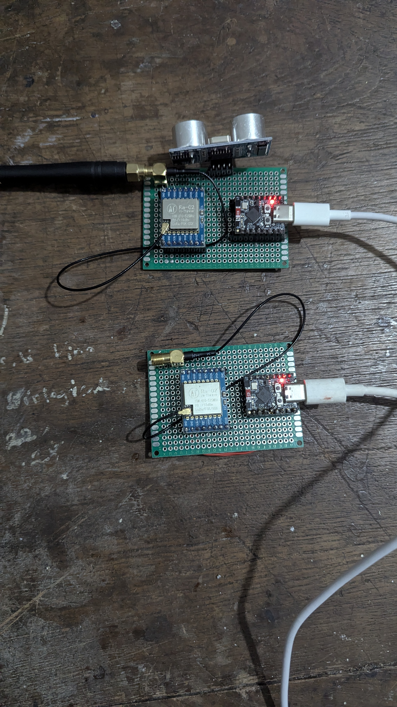
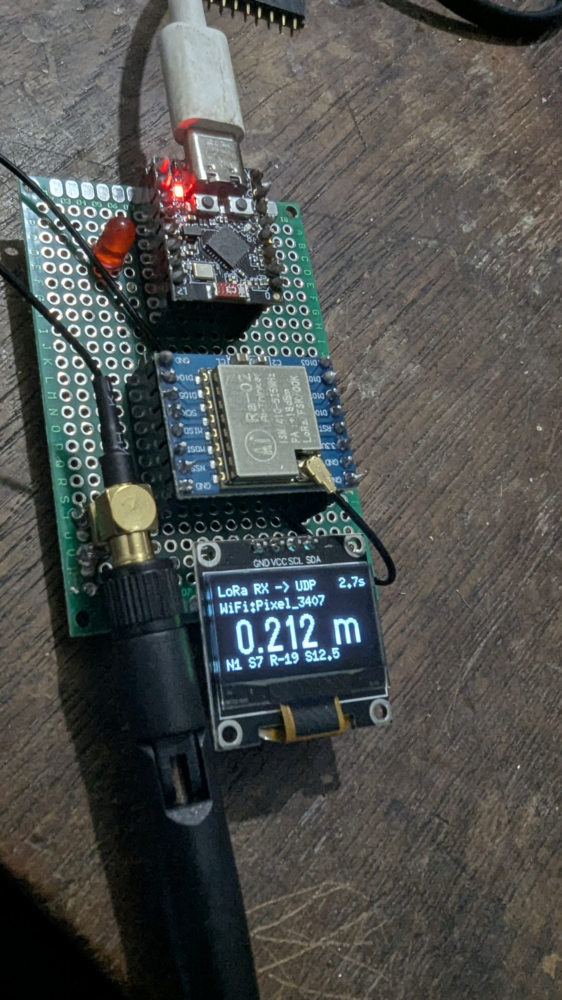
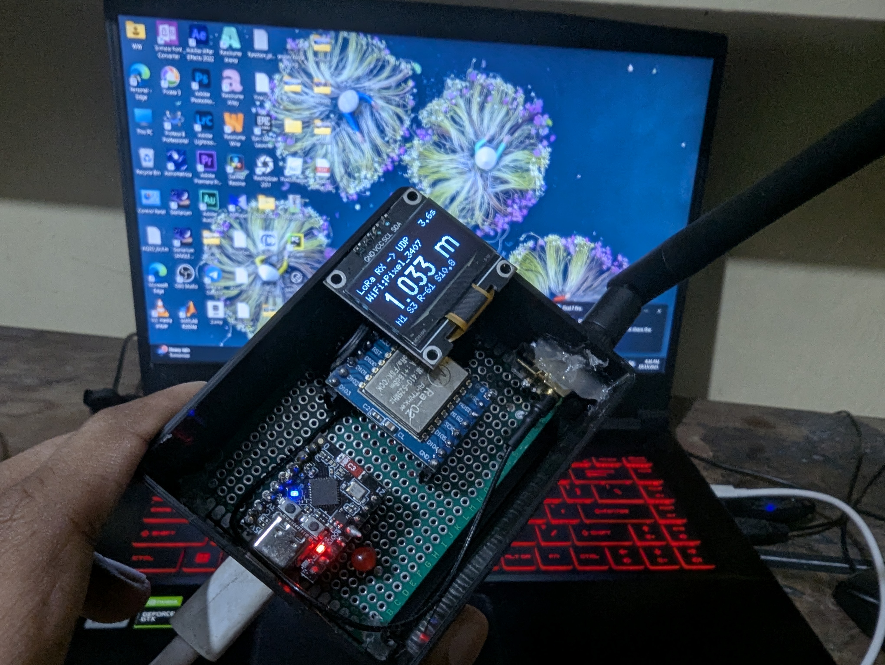
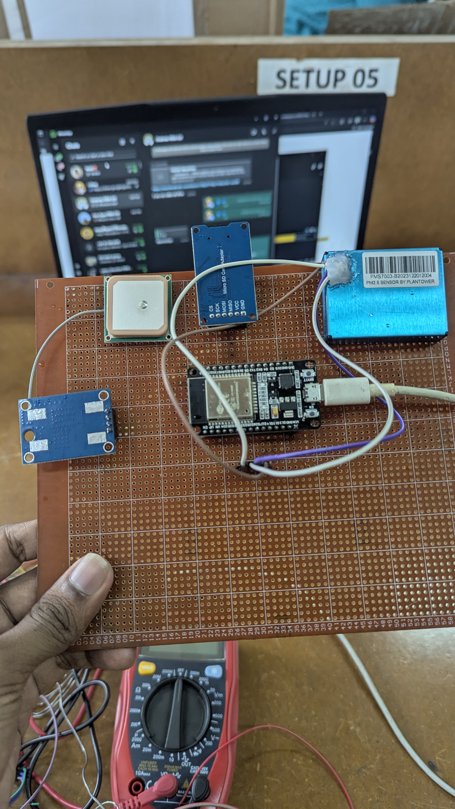
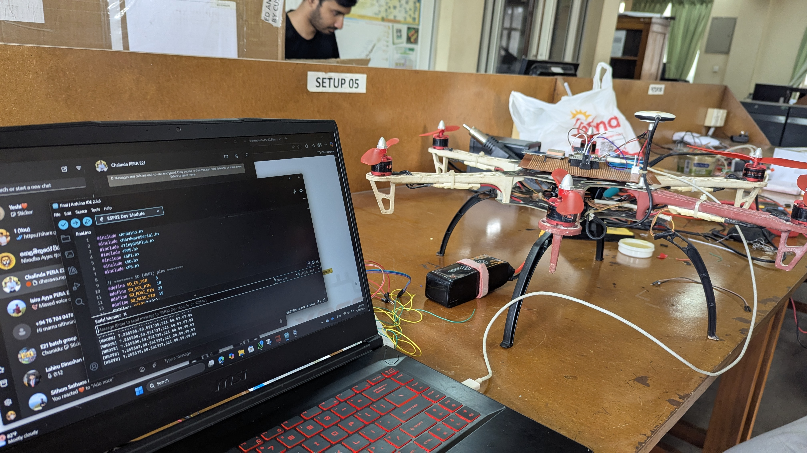
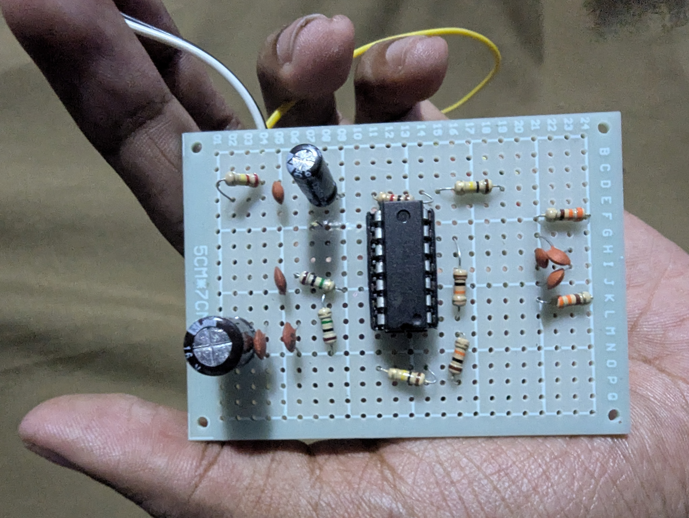
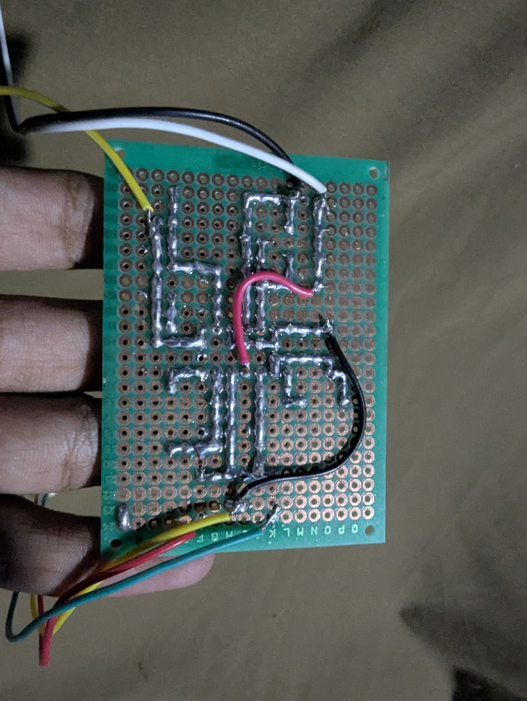

Electronics Enthusiast & Hardware Soldering
An electronics enthusiast at heart — from custom perfboards to precision soldering, I bring circuits to life for every hardware project I take on.
I'm an electronics enthusiast at heart, and hardware is where I feel most at home. Beyond writing firmware, I enjoy designing circuits, hand-soldering components and turning a bare perfboard into a working, field-ready system — a practical skill I've built up across nearly every hardware project I've been part of.
For FloodLink, I was responsible for the complete circuit assembly and soldering of the LoRa-based sensor nodes — interfacing the ultrasonic sensors, LoRa transceiver modules and microcontrollers, and hand-wiring every connection on the field-deployable boards myself.
On SkyAQ, our air-quality measurement drone, I assembled and soldered the core sensor stack — the ESP32 controller, PM2.5 sensor, GPS module and SD-card interface — into a single reliable circuit built to survive flight vibration and handling.
I also designed and built a compact EMG analog front-end for one of our research projects, hand-soldering the instrumentation-amplifier stage directly along clean lead paths with barely any jumper wires — a neat, low-noise layout built for signal integrity.
Key Highlights
Hands-On Hardware







Click any photo to view it full size.